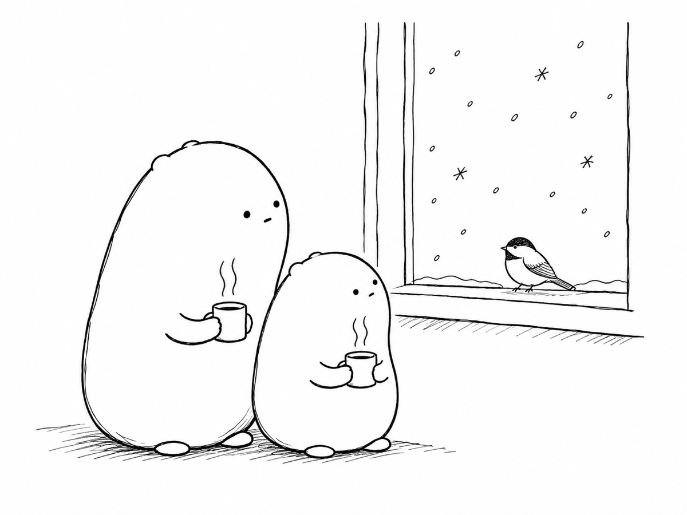

Today’s poem

Little Wonderer’s Winter Plan
Little Wonderer said, “When the winter winds blow,
I’ll borrow a plan from the critters I know.
I’ll freeze like a wood frog, all frosty and still,
with sugar to guard me through every chill.
I’ll hide lots of seeds like a chickadee might,
and find every one when I need them just right.
I’ll cool like a chipmunk and slow way down,
then warm myself up with some fat that is brown.
I’ll shiver like bees in a buzzy round ball,
and tunnel with mice underneath the snowfall.”
Big Wonderer listened, then poured out some tea.
“Those plans are all splendid. But here’s one for me:
I’ll sit by the window, all cozy and fed,
and watch them do winter from in here instead.”